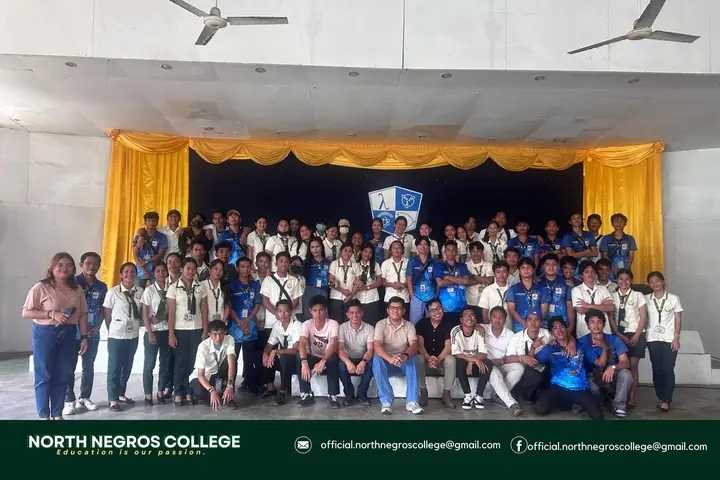
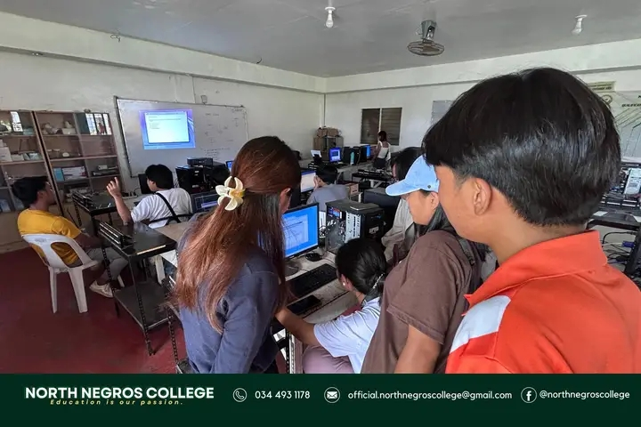

Northern Negros College (NNC) is an educational institution that provides quality education and helps students develop the knowledge, skills, and values they need for their future careers. It offers different programs and encourages students to learn, grow, and become responsible members of society.

Northern Negros College (NNC) is an educational institution that provides students with quality education and opportunities to develop their skills and knowledge. One of its programs is Computer Science, which focuses on programming, software development, problem-solving, and other areas of technology. The program prepares students with skills that can be useful in the growing field of information technology.

Northern Negros College also offers Computer Systems Servicing (CSS) NC II assessment, which evaluates students' skills in computer installation, configuration, troubleshooting, networking, and maintenance. It helps students demonstrate their practical skills and gain a recognized TESDA qualification.